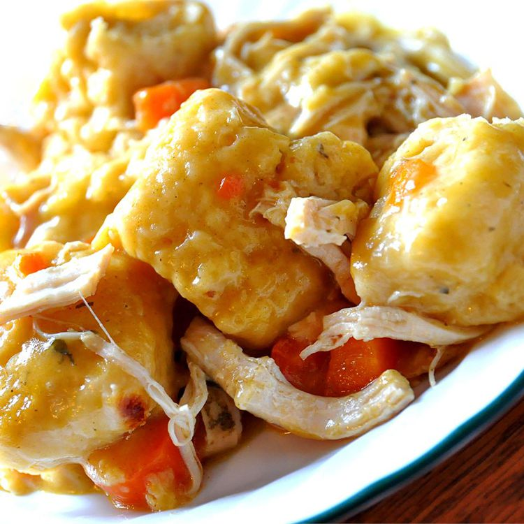

SLOW COOKER CHICKEN AND DUMPLINGS

Description
An easy crockpot chicken and dumplings recipe for a filling, comforting meal on a cold, snowy day. I have four children who are picky eaters, and they love this!
Ingredients
- 4 skinless, boneless chicken breast halves
- 2 tablespoons of butter
- 2 cans condensed cream of chicken soup
- 1 medium onion, finely diced
- 1 (10 ounce) package refrigerated biscuit dough
- A little bit of water
Steps
- Place chicken, condensed soup, onion, and butter in a slow cooker. Add enough water to cover; stir well. Cover and cook on High for 5 to 6 hours.
- About 30 minutes before serving, tear biscuit dough into pieces. Place dough in the slow cooker. Cook until dough is no longer raw in the center.
- Serve!